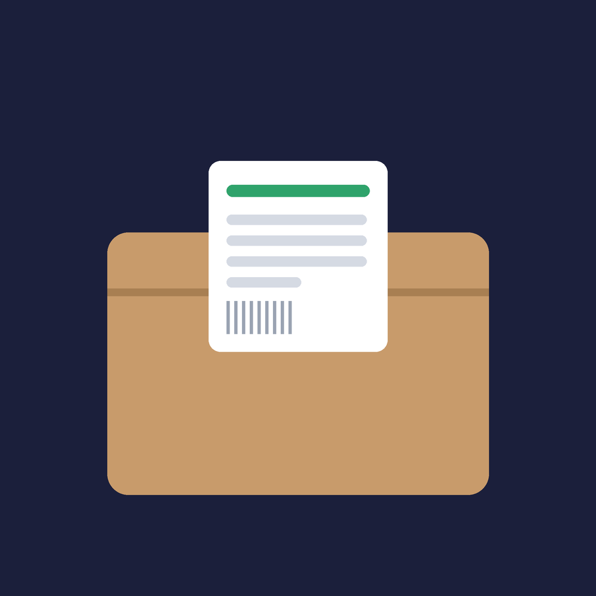
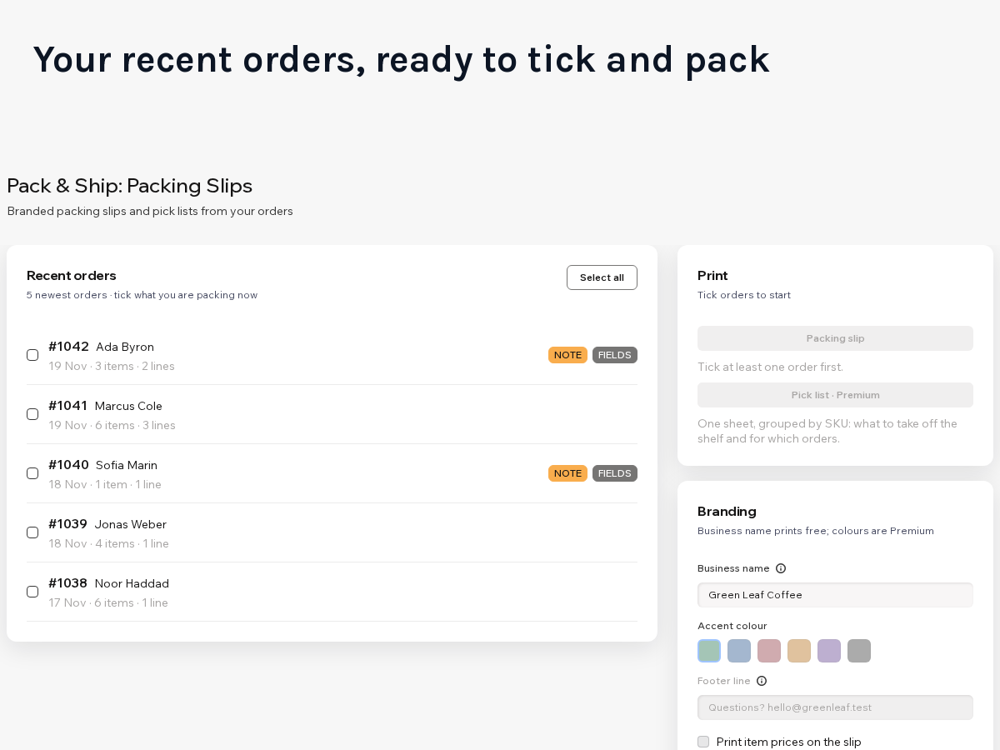

Pack & Ship: Packing Slips
Packing slips and pick lists from your orders
- Print a slip for any order from the dashboard
- Batch up to 50 orders into one PDF
- A pick list grouped by SKU for the shelf
- Your business name, accent colour and footer

What it does
Every parcel needs something inside it, but Wix's printed order page cannot be changed and prints one order at a time.
This app adds a page to your dashboard. It lists your recent orders, newest first, with the customer, item count and any note or custom field they filled in. Tick the orders you are packing, press Packing slip, and each one prints on its own page: your business name, the order number and date, the ship-to address, the items with options and SKUs, and the customer's note. Prices stay off unless you want them.
Working through a stack of orders? The pick list puts every ticked order on one sheet, grouped by SKU, with the total quantity and the order numbers that need it. Carry it to the shelf and gather everything once.
Add your business name, accent colour and footer line in the branding panel; every slip carries them. The app builds the PDF in your browser and downloads it, so nothing leaves your Wix account and no order data is stored anywhere else.
The free plan prints one order at a time, plain black and white. Premium batches up to 50 orders into one PDF, adds the pick list, your accent colour and footer, and the option to show prices.
Price
Free
Premium
$6/month, or $5/month billed yearly ($60/year). Up to 50 orders per PDF, pick list, accent colour and footer